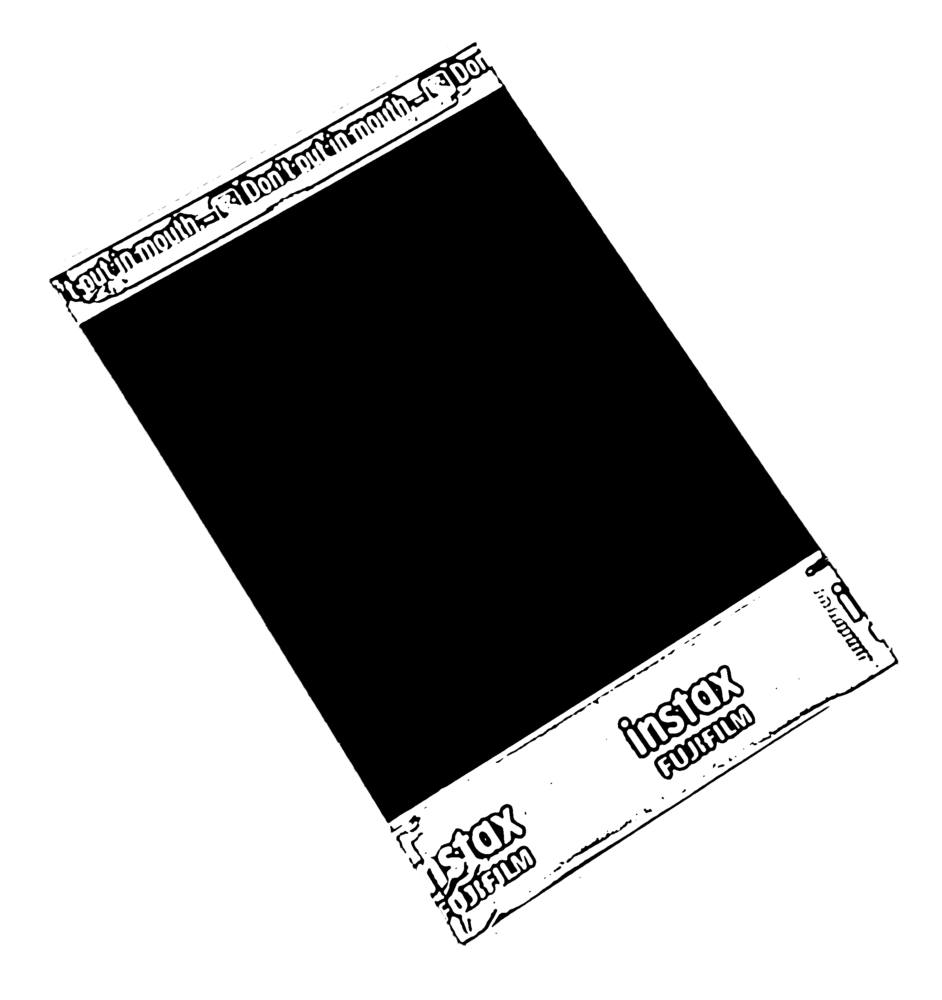

윤희경 Heekyung Yoon
가짜와 진실: 이미지
1차 수리
우선 디디위베르만의 서적들을 많이 참고했다. 이미지 윤리학이란 것 자체에 무지하였기 때문에 학습이 우선적이었다. 서적뿐 아니라 논문 등을 다양하게 읽고 분석했다.
2차 수리
큰 틀로 사용된 방식은 결국 이미지였다. 이미지의 문제를 인식시키기 위해서는 가장 직관적인 것은 이미지라는 말을 바탕으로 이미지를 이용한 변증법을 만들었다. 변증법이라 하면 어려워보이지만, 사실 간다하다. 그저 이미지 더미에서 문제점을 강하게 느끼게 하는 것이 정 반 합의 합이 되는 것이다. 그렇게 시각적으로 단번에 전달하는 것이 텍스트보다 효과적이라는 것이 디디 위베르만의 말을 이용했다.